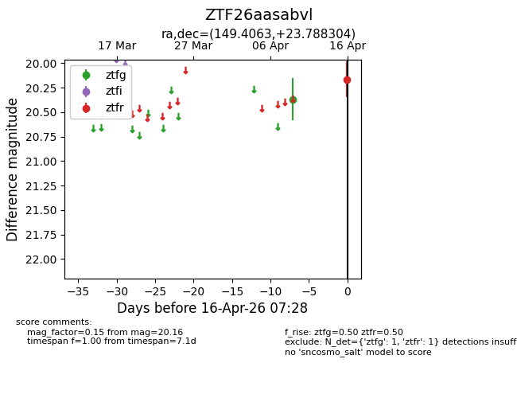
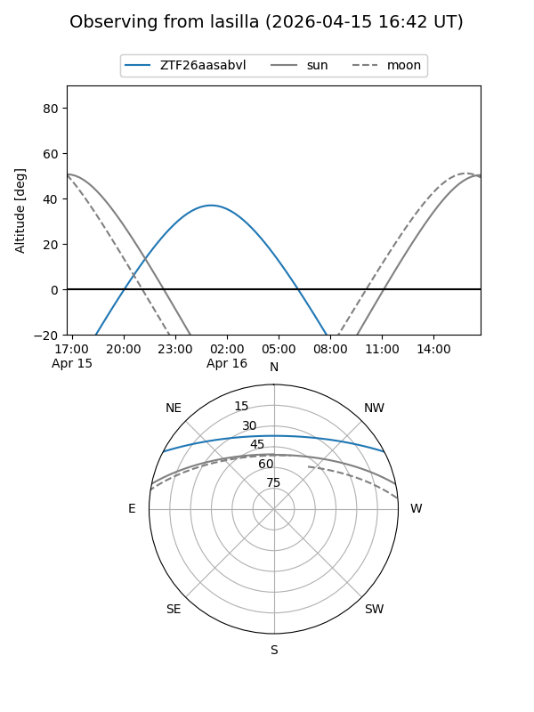
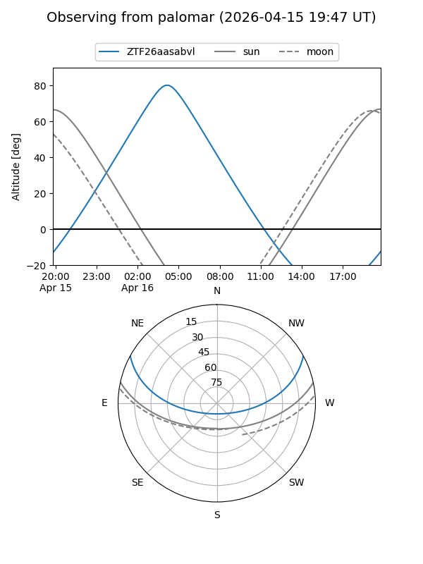
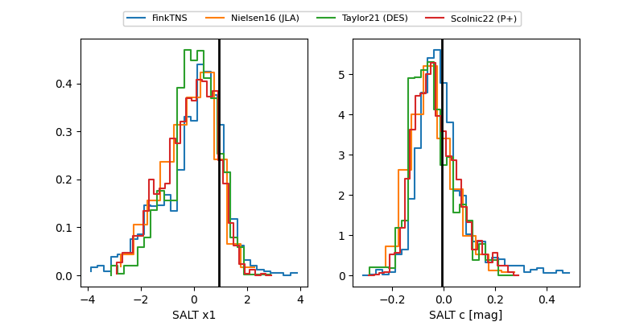

ZTF26aasabvl
Target ZTF26aasabvl at 2026-04-16 07:35
Aliases and brokers:
FINK: link
Lasair: link
ALeRCE: link
alt names
ZTF26aasabvl (ztf,fink_ztf)
Coordinates:
equatorial (ra, dec) = 149.4063,+23.78830
equatorial (HMS+DMS) = 09:57:37.52,+23:47:17.89
galactic (l, b) = (207.8387,+50.81509)
Flags:
Photometry:
last ztfg=20.37, ztfr=20.16
1 ztfg, 1 ztfr detections
Lightcurve

Visibility


Additional plots
